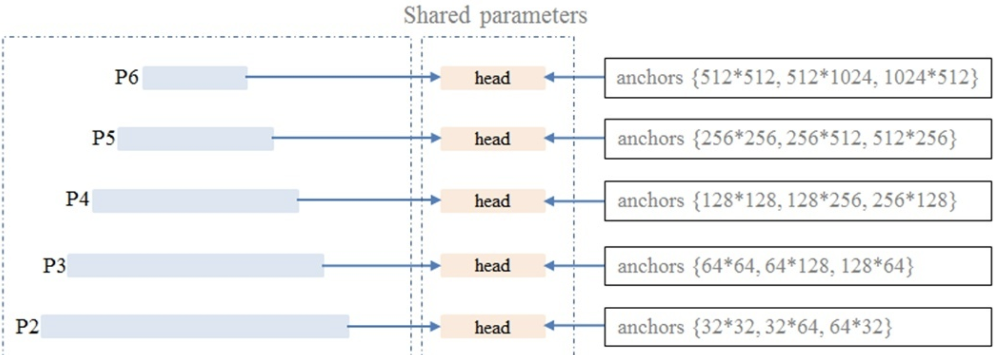
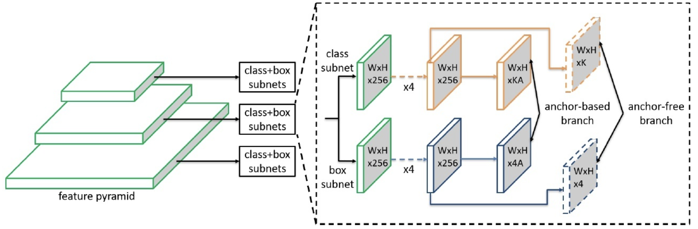
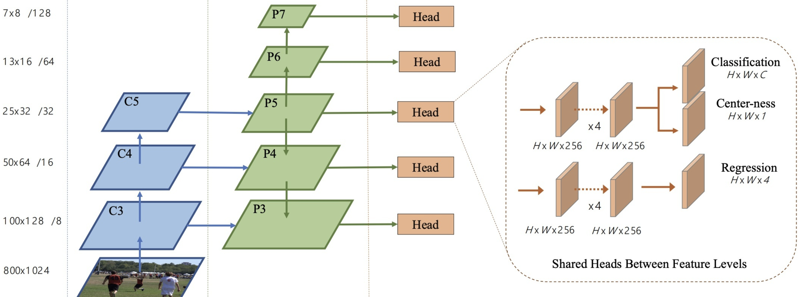
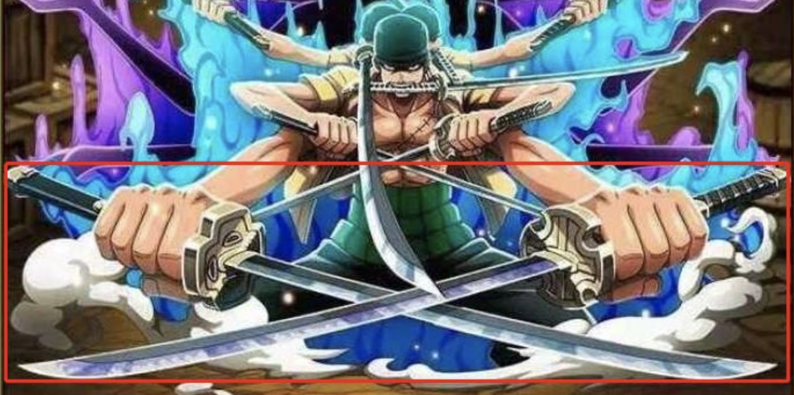
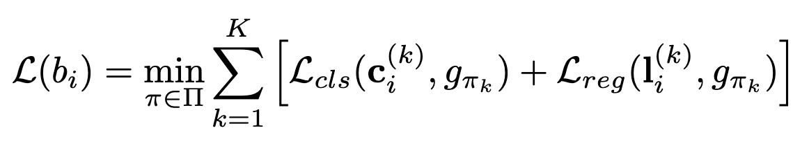
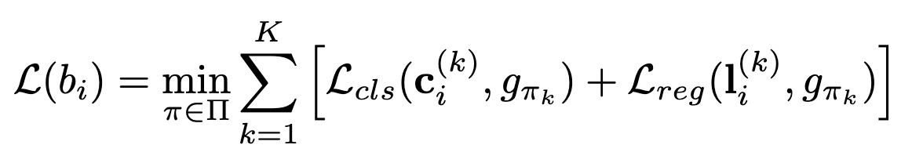

Overview of Object Detection
Categorization
Anchor-based vs Anchor-free
Representative anchor-based methods include Faster-RCNN, SSD, Yolo-v2/v3. Representative anchor-free methods include CornerNet (top-left/bottom-right), ExtremeNet (four keypoints + center point), CenterNet, FCOS (center + 2 distance to bbox). Methods that combine anchor-based branch and anchor-free branch include FSAF, SFace, GA-RPN.
Yolo has a few variants. Yolo-v1 can be seen as anchor-free. Anchor is introduced since v2.
Anchor & FPN-based pipeline consists of four main components:
- Assignment: between anchor and feature map. Feature map with large perceptive field correspond to large anchors and vice versa. 
- Groundtruth: for each gt, find anchor with largest IOU as positives. For the rest anchors, those with IOU larger than the threshold are positives and vice versa.
- Output & loss: network output and loss design. For each feature map in the pyramid, the output is WxHxKA (K=# of classes) and WxHx4A (A=# of anchors).
- Prediction: sort predictions based on scores, and regress those with high scores. The final predicion is post-nms results.
Limitations of anchor-based methods:
- The essence of anchor is object candidates. Due to the variance of object shape and location, the number of anchors is large, otherwise objects may be missed. DSSD has 40K anchors, RetinaNet has 100K anchors. This will likely cause imbalance between positives/negatives.
- Hyperparameters such as anchor number, scale, aspect ratio are hand-crafted.
Anchor-free methods:
Take CornerNet as an example, the idea is to predict a pair of keypoints, top-left/bottom-right and generate their heatmaps as well as their connections (embeddings, offsets). The pairing loss enforces that embeddings for the keypoint pairs belonging to the same object to be close and vice versa.

- Assignment: FSAF uses online feature selection, allowing each instance to select the feature map level. FCOS regulates the scale of instance to be predicted for each feature map level. FSAF/FCOS assigns an instance to a single feature map whereas FoveaBox can assign an instance to multiple levels.
- Groundtruth: for each gt, it's first projected to feature pyramid, defined as projected box. Then it will be used to generate effective box with some hyper-parameters. FCOS uses a centerness branch to predict the centerness of each pixel in the feature map, with respect to gt box center. 
- Output & Loss: Each feature map in the pyramid predicts WxHxK classification scores and WxHx4 regression offsets.
- Prediction.
Advantages of anchor-free: More positive samples.
Limitations: performance gap compared to two-stage detectors.
In anchor-based methods, bboxes are regressed based on anchors; each point in the feature map may correspond to multiple objects. In anchor-free (anchor-prio-free) methods, each point serves one object.
NMS-free
NMS is used for post-processing in object detection. The idea is: first sort bboxes based on their scores (decreasing order), then compare the first one against the rest, remove those with IOU greater than certain threshold. Then use the next bbox as reference and repeat. The algorithm stops when there's no bbox in the list.
import numpy as np
def nms(dets, thresh):
"""Pure Python NMS baseline."""
x1 = dets[:, 0]
y1 = dets[:, 1]
x2 = dets[:, 2]
y2 = dets[:, 3]
scores = dets[:, 4]
areas = (x2 - x1 + 1) * (y2 - y1 + 1)
order = scores.argsort()[::-1]
keep = []
while order.size > 0:
i = order[0]
keep.append(i)
xx1 = np.maximum(x1[i], x1[order[1:]])
yy1 = np.maximum(y1[i], y1[order[1:]])
xx2 = np.minimum(x2[i], x2[order[1:]])
yy2 = np.minimum(y2[i], y2[order[1:]]）
w = np.maximum(0.0, xx2 - xx1 + 1)
h = np.maximum(0.0, yy2 - yy1 + 1)
inter = w * h
ovr = inter / (areas[i] + areas[order[1:]] - inter)
inds = np.where(ovr <= thresh)[0]
order = order[inds + 1]
return keep
The reason for NMS-free methods is to deal with cases where overlapping objects are a lot. 
Some methods include:
- Detection in Crowded Scenes: One Proposal, Multiple Predictions
 
 - End-to-end people detection in crowded scenes (CVPR 16): Uses LSTM and proposes hungarian loss for matching with gt, which has been the standardized way for label assignment now.
- Relation Networks for Object Detection (CVPR 18): uses self-attention to compute f_A (appearance feature), f_G (geometric feature), f_R(n) (relation feature of the whole object with respect to the nth object). The paper also proposes end-to-end Duplicate removal network (DRN) module to replace NMS.
- End-to-End Object Detection with Transformers (DETR ECCV 2020): uses transformer and sets detection number to be 100. Use hungarian loss for matching.
- Pix2seq: A Language Modeling Framework for Object Detection
- End-to-End Object Detection with Fully Convolutional Network (CVPR 21, DeFCN): many-to-one (one gt can match many proposals) is why NMS is necessary. Only one-to-one matching can get rid of NMS.